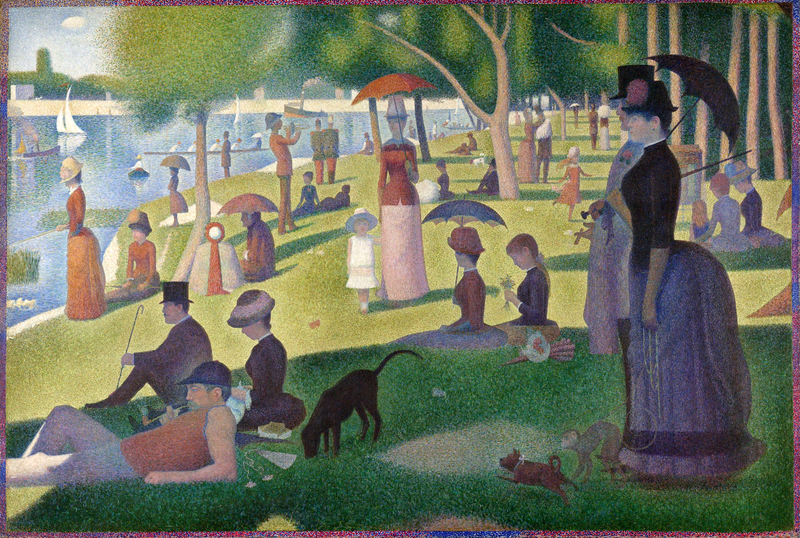
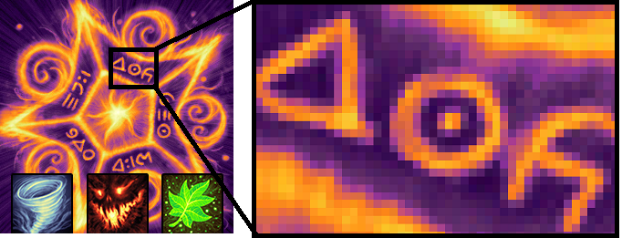

mouse-over animations ...
Pixel Art ... Pixel art is an extension of Pointillism... Seurat's technique of placing points of different color and allowing the human eye to blend them into new hues, was crucial to early video game development. ... stippling??? ...
Raster-based
Georges Pierre Seurat - A Sunday on La Grande Jatte https://commons.wikimedia.org/wiki/File:A_Sunday_on_La_Grande_Jatte,_Georges_Seurat,_1884.png Pointillism - Touch the Sun by Sakura-Chrno http://sakura-chrno.deviantart.com/art/Pointillism-Touch-the-Sun-157979627
J. W. Bjerk http://opengameart.org/content/painterly-spell-icons-part-3n-Note Scale ...
Habit Helper ...
Neural Network ... neurogenesis ...